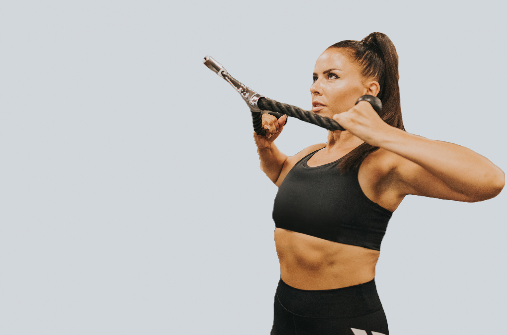

MUSCLE & METABOLISM
Women start losing muscle at age 30. By age 70, we have 35% less muscle.
GOOD NEWS: You can decrease muscle loss by 8% per decade. That increases metabolism & gives you a leaner physique.
Shannon Peterson
Specialized coaching for Perimenopause thru Post-Menopause
Hi! I'm Shannon, your perimenopause/post-menopausal Master Personal Trainer. For over 30 years, I've trained thousands of women just like you -- struggling with unwanted weight gain, fatigue, demotivation and loss of self-confidence that often starts in midlife and continues throughout the decades. And at age 54, I've personally experienced it. Women are told "that's just the way it is now", and lose hope. Wrong!

I guarantee you CAN improve body composition, lose fat, build bone density, gain lean muscle, and feel more like you again! As a 3x Ironman World Championship finisher, I know it takes more than just a cookie cutter exercise program to get results. It takes scientifically proven strategic implementation designed to optimize your
THRIVE fitness clients learn a wholistic way of training, eating, and thinking to enhance your hormonal health.
Women start losing muscle at age 30. By age 70, we have 35% less muscle.
GOOD NEWS: You can decrease muscle loss by 8% per decade. That increases metabolism & gives you a leaner physique.
Women start losing bone density at age 35. As much as 45% loss by age 85.
GOOD NEWS: Not only can you decrease future bone loss, you can still BUILD bone in menopause.
Heart Disease, Metabolic Disease & Diabetes risk all go up after menopause.
GOOD NEWS: You can decrease risk of Cardiovascular Heart Disease by 40-70% & Diabetes by 40%
Depression, Brain Fog, and Irritability are all factors of hormonal changes.
GOOD NEWS: Brain-Body neural connections improve and so does your memory, mood, anxiety & depression.